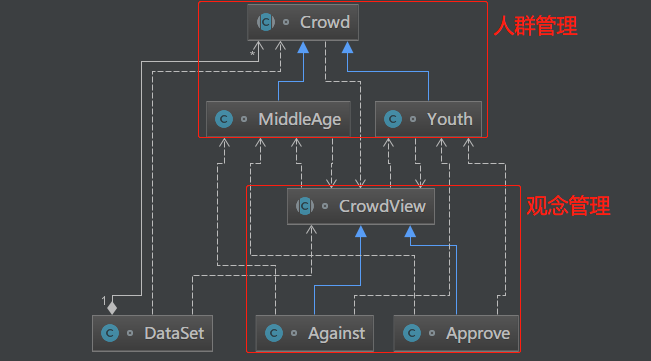
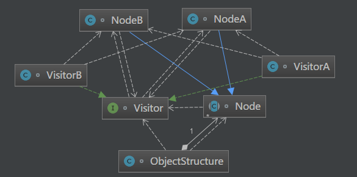

原文出处:本文由博客园博主知了一笑提供。
原文连接:https://www.cnblogs.com/cicada-smile/p/11933050.html
原文连接:https://www.cnblogs.com/cicada-smile/p/11933050.html
本文源码：GitHub·点这里 || GitEE·点这里
一、生活场景
1、场景描述
电竞是游戏比赛达到“竞技”层面的体育项目。利用电子设备作为运动器械进行的、人与人之间的智力对抗运动。通过电竞，可以提高人的反应能力、协调能力、团队精神等。但是不同人群的对电竞的持有的观念不一样，有的人认为电竞就是沉迷网络，持反对态度，而有的人就比较赞同。下面基于访问者模式来描述该场景。
2、场景图解

3、代码实现
public class C01_InScene {
public static void main(String[] args) {
DataSet dataSet = new DataSet() ;
dataSet.addCrowd(new Youth());
dataSet.addCrowd(new MiddleAge());
CrowdView crowdView = new Against() ;
dataSet.display(crowdView);
crowdView = new Approve() ;
dataSet.display(crowdView);
}
}
/**
* 双分派,不同人群管理
*/
abstract class Crowd {
abstract void accept(CrowdView action);
}
class Youth extends Crowd {
@Override
public void accept(CrowdView view) {
view.getYouthView(this);
}
}
class MiddleAge extends Crowd {
@Override
public void accept(CrowdView view) {
view.getMiddleAgeView (this);
}
}
/**
* 不同人群观念的管理
*/
abstract class CrowdView {
// 青年人观念
abstract void getYouthView (Youth youth);
// 中年人观念
abstract void getMiddleAgeView (MiddleAge middleAge);
}
class Approve extends CrowdView {
@Override
public void getYouthView(Youth youth) {
System.out.println("青年人赞同电竞");
}
@Override
public void getMiddleAgeView(MiddleAge middleAge) {
System.out.println("中年人赞同电竞");
}
}
class Against extends CrowdView {
@Override
public void getYouthView(Youth youth) {
System.out.println("青年人反对电竞");
}
@Override
public void getMiddleAgeView(MiddleAge middleAge) {
System.out.println("中年人反对电竞");
}
}
/**
* 提供一个数据集合
*/
class DataSet {
private List<Crowd> crowdList = new ArrayList<>();
public void addCrowd (Crowd crowd) {
crowdList.add(crowd);
}
public void display(CrowdView crowdView) {
for(Crowd crowd : crowdList) {
crowd.accept(crowdView);
}
}
}二、访问者模式
1、基础概念
访问者模式是对象的行为模式，把作用于数据结构的各元素的操作封装，操作之间没有关联。可以在不改变数据结构的前提下定义作用于这些元素的不同的操作。主要将数据结构与数据操作分离，解决数据结构和操作耦合问题核心原理：被访问的类里面加对外提供接待访问者的接口。
2、模式图解

3、核心角色
- 抽象访问者角色
声明多个方法操作，具体访问者角色需要实现的接口。
- 具体访问者角色
实现抽象访问者所声明的接口，就是各个访问操作。
- 抽象节点角色
声明接受操作，接受访问者对象作为参数。
- 具体节点角色
实现抽象节点所规定的具体操作。
- 结构对象角色
能枚举结构中的所有元素，可以提供一个高层的接口，用来允许访问者对象访问每一个元素。
4、源码实现
public class C02_Visitor {
public static void main(String[] args) {
ObjectStructure obs = new ObjectStructure();
obs.add(new NodeA());
obs.add(new NodeB());
Visitor visitor = new VisitorA();
obs.doAccept(visitor);
}
}
/**
* 抽象访问者角色
*/
interface Visitor {
/**
* NodeA的访问操作
*/
void visit(NodeA node);
/**
* NodeB的访问操作
*/
void visit(NodeB node);
}
/**
* 具体访问者角色
*/
class VisitorA implements Visitor {
@Override
public void visit(NodeA node) {
node.operationA() ;
}
@Override
public void visit(NodeB node) {
node.operationB() ;
}
}
class VisitorB implements Visitor {
@Override
public void visit(NodeA node) {
node.operationA() ;
}
@Override
public void visit(NodeB node) {
node.operationB() ;
}
}
/**
* 抽象节点角色
*/
abstract class Node {
/**
* 接收访问者
*/
abstract void accept(Visitor visitor);
}
/**
* 具体节点角色
*/
class NodeA extends Node{
@Override
public void accept(Visitor visitor) {
visitor.visit(this);
}
public void operationA(){
System.out.println("NodeA.operationA");
}
}
class NodeB extends Node{
@Override
public void accept(Visitor visitor) {
visitor.visit(this);
}
public void operationB(){
System.out.println("NodeB.operationB");
}
}
/**
* 结构对象角色类
*/
class ObjectStructure {
private List<Node> nodes = new ArrayList<>();
public void detach(Node node) {
nodes.remove(node);
}
public void add(Node node){
nodes.add(node);
}
public void doAccept(Visitor visitor){
for(Node node : nodes) {
node.accept(visitor);
}
}
}三、Spring框架应用
1、Bean结构的访问
BeanDefinitionVisitor类，遍历bean的各个属性；接口 BeanDefinition，定义Bean的各样信息，比如属性值、构造方法、参数等等。这里封装操作bean结构的相关方法，但却没有改变bean的结构。
2、核心代码块
public class BeanDefinitionVisitor {
public void visitBeanDefinition(BeanDefinition beanDefinition) {
this.visitParentName(beanDefinition);
this.visitBeanClassName(beanDefinition);
this.visitFactoryBeanName(beanDefinition);
this.visitFactoryMethodName(beanDefinition);
this.visitScope(beanDefinition);
if (beanDefinition.hasPropertyValues()) {
this.visitPropertyValues(beanDefinition.getPropertyValues());
}
if (beanDefinition.hasConstructorArgumentValues()) {
ConstructorArgumentValues cas = beanDefinition.getConstructorArgumentValues();
this.visitIndexedArgumentValues(cas.getIndexedArgumentValues());
this.visitGenericArgumentValues(cas.getGenericArgumentValues());
}
}
}四、模式总结
1、优点描述
(1) 访问者模式符合单一职责原则、使程序具有良好的扩展性、灵活性；
(2) 访问者模式适用与拦截器与过滤器等常见功能，数据结构相对稳定的场景；
2、缺点描述
(1) 访问者关注其他类的内部细节，依赖性强，违反迪米特法则,这样导致具体元素更新麻烦；
(2) 访问者依赖具体元素，不是抽象元素，面向细节编程，违背依赖倒转原则；
五、源代码地址
GitHub·地址
https://github.com/cicadasmile/model-arithmetic-parent
GitEE·地址
https://gitee.com/cicadasmile/model-arithmetic-parent：访问者模式2.png)